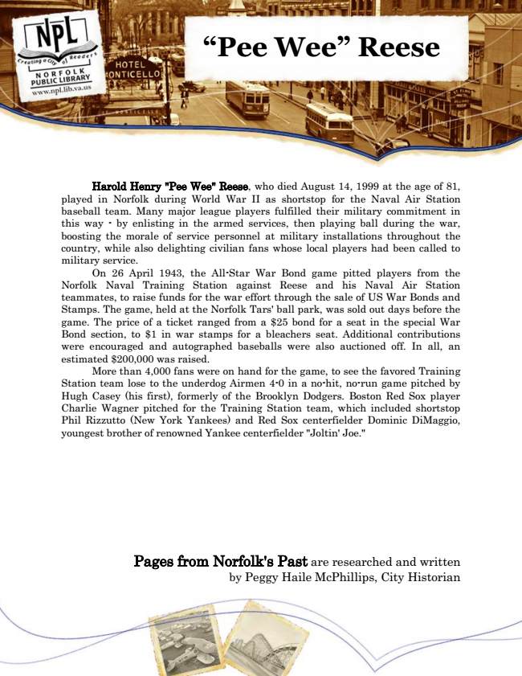

“Pee Wee” Reese
Harold Henry "Pee Wee" Reese, who died August 14, 1999 at the age of 81, played in Norfolk during World War II as shortstop for the Naval Air Station baseball team. Many major league players fulfilled their military commitment in this way - by enlisting in the armed services, then playing ball during the war, boosting the morale of service personnel at military installations throughout the country, while also delighting civilian fans whose local players had been called to military service.
On 26 April 1943, the All-Star War Bond game pitted players from the Norfolk Naval Training Station against Reese and his Naval Air Station teammates, to raise funds for the war effort through the sale of US War Bonds and Stamps. The game, held at the Norfolk Tars' ball park, was sold out days before the game. The price of a ticket ranged from a $25 bond for a seat in the special War Bond section, to $1 in war stamps for a bleachers seat. Additional contributions were encouraged and autographed baseballs were also auctioned off. In all, an estimated $200,000 was raised.
More than 4,000 fans were on hand for the game, to see the favored Training Station team lose to the underdog Airmen 4-0 in a no-hit, no-run game pitched by Hugh Casey (his first), formerly of the Brooklyn Dodgers. Boston Red Sox player Charlie Wagner pitched for the Training Station team, which included shortstop Phil Rizzutto (New York Yankees) and Red Sox centerfielder Dominic DiMaggio, youngest brother of renowned Yankee centerfielder "Joltin' Joe."
Pages from Norfolk's Past are researched and written by Peggy Haile McPhillips, City Historian